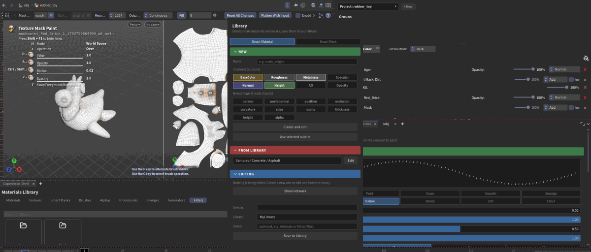
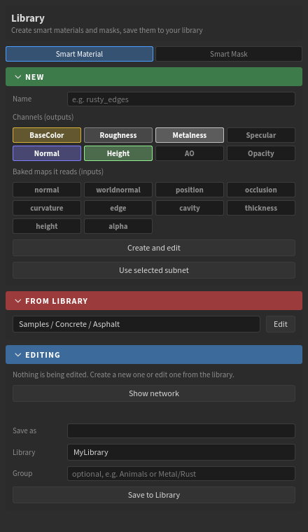
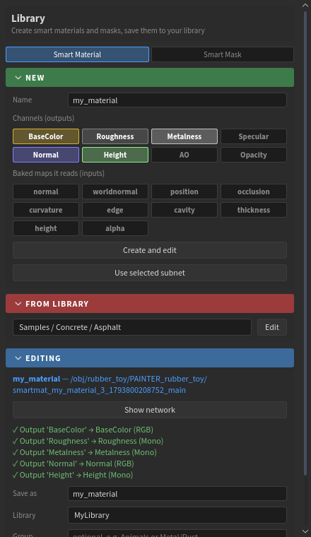

Making smart materials¶
A smart material is a Copernicus subnet:
- inside, any COP network: noises, patterns, ramps, filters;
- outputs named after the channels it makes (BaseColor, Roughness, Metalness, Normal, Height...);
- inputs named after the baked maps it reads (Curvature, Occlusion, Position...);
- controls on the subnet, which show in Properties when its layer is selected.
A smart mask is the same with one output, Mask. Both are made in the Library window and saved to your library. Help > Make your own smart material is a step-by-step tour of it.

1. Open the Library window¶
Click Library on the Painter shelf.

At the top, pick Smart Material or Smart Mask.
2. New¶
- Name it.
- Pick its Channels (outputs): BaseColor, Roughness, Metalness, Normal, Height, Specular, AO, Opacity.
- Pick the Baked maps it reads (inputs): normal, worldnormal, position, occlusion, curvature, edge, cavity, thickness, height, alpha.
- Click Create and edit.
You get a layer with a ready subnet: every output is there, typed and named, fed by a constant, and every input is wired to its bake. The network editor opens inside it.
A smart mask goes on the selected layer instead (Create on selected layer).
Already built a subnet yourself? Select it in the network editor and click Use selected subnet.
3. Build inside¶
Replace the constants with your network. The layer updates while you work, so you see the material on the model as you build it.
4. Controls¶
Add the parameters you want to change later to the subnet itself: right-click it > Edit Parameter Interface. Use them inside with ch("../name").
They show in Properties when the layer is selected:
- sliders, toggles and menus;
- colours, as colour fields;
- ramps, with their point editor;
- folders, as collapsible sections.
5. Check and save¶

Editing shows what the Painter makes of your subnet, so fix anything it marks before saving:
- which output feeds which channel;
- which input gets which bake;
- warnings, such as a bake not done yet or a name it doesn't know.
Then fill in:
- Save as: its name on the shelf.
- Library: one of your library folders (Settings); the samples are read-only.
- Group: optional, e.g.
Metal/Rust.
Click Save to Library. It is saved with a rendered icon, and appears on the Materials shelf (smart masks on Smart Masks).
From library > Edit opens a saved one again as a new layer (for a mask, Add to selected layer).
Names the Painter reads¶
| Output | Channel | Type |
|---|---|---|
BaseColor |
Base colour | RGB |
Roughness |
Roughness | Mono |
Metalness |
Metalness | Mono |
Normal |
Normal (tangent space, 0-1) | RGB |
Height |
Height | Mono |
Specular, AO, Opacity |
Specular, ambient occlusion, opacity | Mono |
Mask |
the mask (smart masks only) | Mono |
| Input | Baked map |
|---|---|
Normal, WorldNormal, Position |
Normals (tangent / world) and position (RGB) |
Occlusion, Curvature, Edge, Cavity, Thickness, Height, Alpha |
Mono maps |
Names are CamelCase and matched ignoring case. A smart mask with an input named Mask is a mask filter: it gets the masks below it.
Normal strength
Copernicus' Height to Normal strength works per UV unit, so a fine pattern gets very strong normals quickly. The samples are set so their normal map is about 95% flat on average. If a material looks all bumps, lower its normal strength.